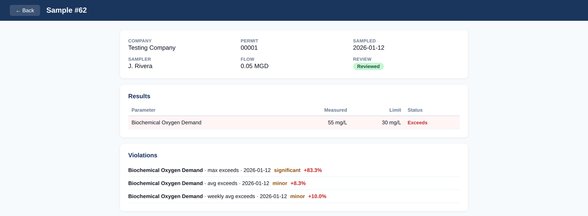

Pretreatment program management
Regreports builds software that takes the paperwork, guesswork, and risk out of environmental compliance. Our flagship, PIMS, keeps permits, lab results, and significant non-compliance in one defensible record — always current, ready for the annual report.
Illustrative view · fictional demo data
Flagship product
PIMS is the system of record for a municipal pretreatment program. It manages industrial-user permits, captures sampling and lab results, detects permit violations automatically, calculates surcharges, and generates enforcement responses — all in one auditable place, built to the federal pretreatment regulations (40 CFR 403).

From the industrial survey to the enforcement letter — every step a pretreatment coordinator owns.
Generate IU permits from the applicable categorical standard, or import a scanned permit and review the parsed limits before they go live.
Drag in a lab-report PDF and OCR pulls the results in — non-detects, units, and reporting limits handled correctly.
Daily-max, monthly-average, and weekly-average limits checked automatically — including the sufficiently-sensitive-method rule.
Flow-weighted BOD / TSS / color surcharges computed from reviewed flow reports and sample concentrations.
An ERG decision matrix turns each violation into the right enforcement response, with a draft letter ready for review.
Signed certifications (40 CFR 403.12(l)) and a tamper-evident audit trail on every change.
PIMS is the first of a family of compliance tools from Regreports. We're building software for the reports nobody enjoys filing — so the people who keep our water clean can spend less time on paperwork and more time on the work that matters.
Pretreatment program management for POTWs.
Adjacent environmental-reporting tools, informed by the field.
If a compliance task is eating your week, we'd like to hear about it.
Regreports was founded on a simple observation: the people responsible for environmental compliance are buried in spreadsheets, PDFs, and deadlines. We build focused, dependable software that turns that burden into a few confident clicks — built hand-in-hand with the coordinators who use it every day.
A short walkthrough with a few of your permits and lab reports is the fastest way to see the fit.
or email tim@regreports.com